11 Best Celebrity Brothers
- 1. The Vaughan Brothers
We can all agree that Stephen "Stevie" Ray Vaughan and his brother, Jimmie Vaughan, were one of the best pairs of celebrity brothers of all time.
AllMusic describes Stevie Ray as "a rocking powerhouse of a guitarist who gave blues a burst of momentum in the '80s, with influence still felt long after his tragic death."
Although his brother passed away in 1990, Jimmie is still rocking away to this very day, releasing a new album, Plays More Blues, Ballads and Favorites, as recently as 2011.
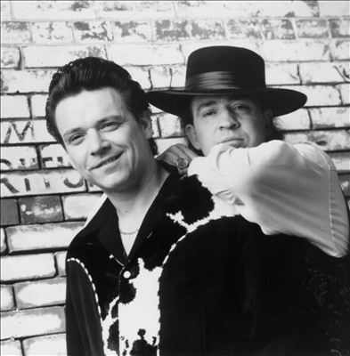
- 2. The Gallagher Brothers
There's no question that Liam and Noel Gallagher are two of the most musically talented and best celebrity brothers that the world has ever known.
Though the two brothers aren't on the best terms these days, for many years they comprised the powerful brotherly songwriting unit at the core of legendary British rock band, Oasis.
Even if these brothers don't speak much anymore, they can at least look back fondly at all that they accomplished together as members of one of the biggest rock bands in the world.
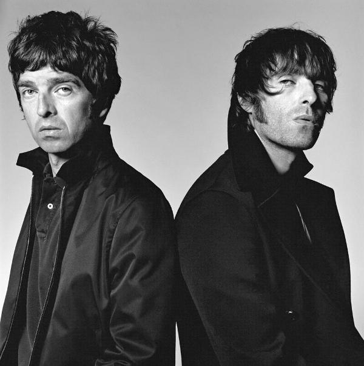
- 3. The Affleck Brothers
Without a doubt, the Afflecks are one of the most famous and best pairs of celebrity brothers ever. Ben, a two-time Academy Award winning actor, director, writer, producer,
and philanthropist, is probably the better-known of the pair, but his younger brother, Casey, has also made a name for himself in recent years, earning a Best Supporting Actor
Academy Award nomination for his portrayal of Robert Ford in the 2007 film The Assassination of Jesse James by the Coward Robert Ford.
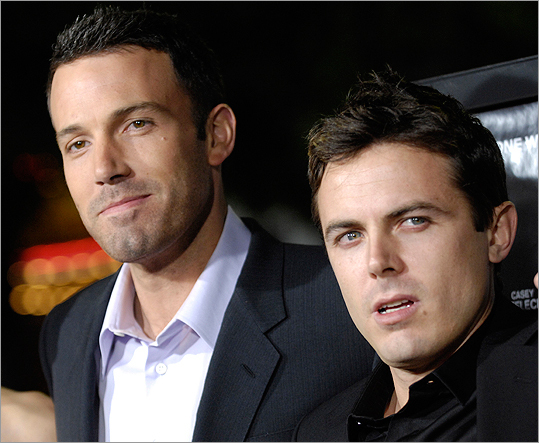
- 4. The Wilson Brothers
Speaking of actors, the Owen and Luke Wilson are definitely some of the best celebrity brothers ever. The two Dallas brothers are probably best known for their acting careers,
but they've also branched out into writing, producing, and directing. The two brothers have collaborated on a number of projects, appearing alongside one another in critically
acclaimed films such as Bottle Rocket and The Royal Tenenbaums.
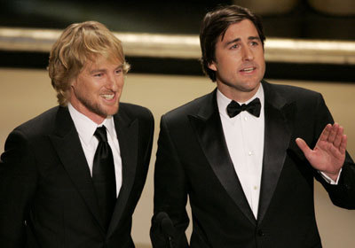
- 5. The Baldwin Brothers
The Baldwin brothers -- Alec, Daniel, William, and Stephen, from oldest to youngest -- are surely some of the most beloved and best celebrity brothers since time immemorial.
All of the Baldwin brothers have dabbled in show biz, but it's probably Alec, best known for his starring role as Jack Donaghy on the popular NBC sitcom 30 Rock, who has
enjoyed the most success.
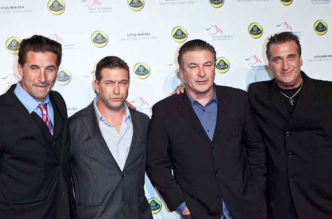
- 6. The Estevez Brothers
No one would dispute the fact that Emilio, Ramon, and Carlos Estevez (better known by his stage name Charlie Sheen) are some of the best celebrity brothers ever.
Although it's Charlie that's gotten the most press in recent years, all three of the Estevez bros have been active in show business for several decades. Maybe you forgot that
Emilio was a member of the infamous "Brat Pack" in the 1980s, starring in movies such as The Breakfast Club and St. Elmo's Fire? Flashback!
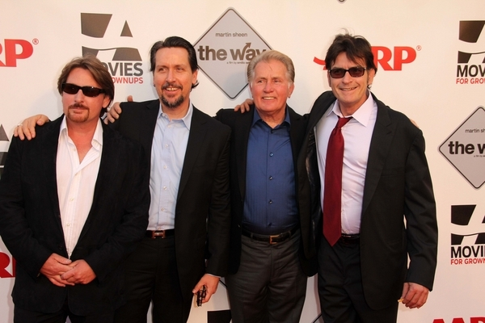
- 7. The Renault Brothers
You can't deny that the Renault brothers are some of the most unforgettable and best celebrity brothers the world has ever known. Fernand, Louis, and Marcel founded
the French car company Renault; these days, Groupe Renault is a French multinational automobile manufacturer worth upwards of $86 billion. Cha-ching!
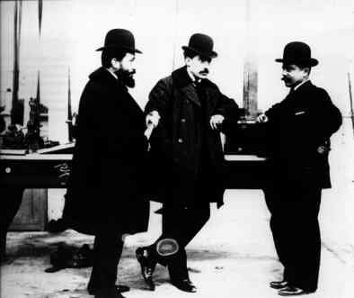
- 8. The Gooding Brothers
It's no secret that Cuba Gooding, Jr. and Omar Gooding are two of the best celebrity brothers ever. Cuba is an Academy Award-winning actor, best known for his roles in movies
like Jerry Maguire, Boyz n the Hood, and Selma; Omar is an actor, rapper, voice artist, and comedian.
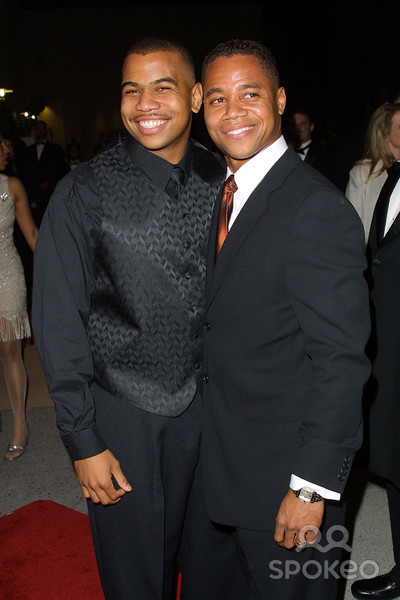
- 9. The Manning Brothers
It's no coincidence that Cooper, Peyton, and Eli Manning are not only three of the best celebrity brothers ever, but also three exceptional athletes. While most people
recognize the younger Manning brothers, Eli and Peyton, from their successful careers in the NFL, few know that the eldest Manning, Cooper, was also on his way to a successful
football career until he was diagnosed with spinal stenosis and forced to step away from the game. Nowadays Cooper is a partner at the energy firm Howard Weil, and recently began
hosting his very own show, The Manning Hour, on Fox Sports. You can be sure that former professional football player Archie Manning (the father of the Manning brothers) is proud
of all three of his sons.
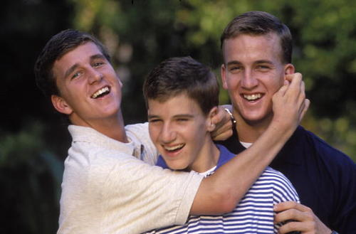
- 10. The Bridges Brothers
One of the all-time best pairs of celebrity brothers has to be the Bridges brothers. The younger of the two brothers, Jeff, is one of America's most beloved actors,
known for his iconic performances in films such as The Big Lebowski and Fearless. The older Bridges brother has also racked up quite an impressive filmography as an actor
and director. Most recently, Beau has received recognition for his role as Barton Scully on the acclaimed Showtime period drama, Masters of Sex.
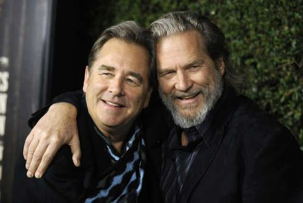
- 11. The Isley Brothers
O'Kelly, Rudolph, Ronald, and Vernon Isley are certainly some of the best celebrity brothers ever. In 1954, the four of them began performing together as the Isley Brothers,
and soon their younger brothers Ernie and Marvin also joined the band. With immensely popular recordings like "Shout" and "Twist and Shout," the Isley Brothers are one
of the most beloved American musical groups of all time; in 1992, the brothers were inducted to the Rock and Roll Hall of Fame.
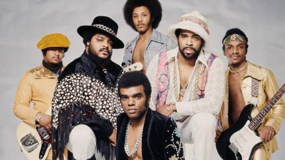
- Now don't try to say that those aren't some of the best celebrity brothers ever!
- Return to Listicle Website.